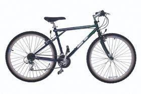

DÍA MUNDIAL DE LA BICICLETA
Bicicleta


La primera bicicleta, fabricada con madera, se llamaba draisina porque la inventó Karl Drais en 1817. No tenía pedales: había que empujarla con los pies en el suelo. Un herrero escocés llamado Kirkpatrick Macmillan creó la primera máquina con pedales y dos ruedas en 1839.
La bicicleta sí es efectiva como medio de transporte para distancias no tan extensas, para usarla dentro de una ciudad o pueblo es de mucha utilidad.
El uso de la bicicleta está extendido en casi todo el continente europeo. En países como Holanda, Suiza, Alemania, unas zonas de Polonia y en los países nórdicos; se ha convertido en uno de los primordiales medios de transporte. Pasando a Asia, fundamentalmente en China y La India, es la primera forma de transporte.

Las bicicletas de montaña (también conocidas como MTB) están diseñadas para “fuera de ruta” por lo que son bastante resistentes. Están equipadas con llantas anchas con dibujos marcados para mejorar el agarre en terrenos sueltos. Regularmente usan manubrios rectos o de doble altura. Las MTB se pueden encontrar sin suspensión (rígidas), con suspensión delantera (hardtail) o con doble suspensión (full-suspension) dependiendo de su especialidad

Son bicicletas orientadas a obtener velocidad en pavimento, de construcción más ligera que otras bicicleta, están dotadas con ruedas más grandes, delgadas y provistas de llantas angostas y con dibujo liso. Las bicis de ruta utilizan manubrios drop-bar para lograr una postura más aerodinámica.

Las bicicletas híbridas son bastante versátiles ya que combinan características de las bicis de montaña y de las de ruta.Estas bicicletas nacieron como una solución para quienes necesitan una bicicleta para la ciudad, pero que tenga la flexibilidad de ser usada en diferentes terrenos. Los cuadros son resistentes y con una geometría que permite adoptar una posición cómoda que permite relajar los brazos y el cuello.
La gran mayoría de estas bicicletas usan ruedas pequeñas, siendo 16 y 20″ las más comunes, aunque es posible encontrar plegables con rodados más convencionales. Casi todas las plegables están diseñadas para uso urbano, no obstante existen modelos que aguantan viajes largos sin problemas. Un inconveniente de de las ruedas pequeñas es que son más sensibles a las imperfecciones del camino, aunque si lo que necesitas es una bici que puedes llevar contigo en todo momento no hay como una plegable. En general vienen equipadas con 18- 20 cambios.

Este tipo de bicicletas están diseñadas para trayectos cortos y sobre pavimento preferencialmente. Su geometría y manubrio característico permiten una postura sumamente relajada. Estas bicicletas suelen ser pesadas y usan llantas anchas lo que las hace poco eficientes en trayectos de más de 10km. Normalmente tienen una sola velocidad aunque algunos fabricantes tienen modelos con tres velocidades. Otra característica común en las cruiser son los frenos de contrapedal.

Estas bicicletas se usan para recorrer largas distancias y cargar peso. Sus cuadros son muy robustos e incluyen monturas para instalar rack trasero y delantero además de varias caramañolas. Aunque la gran mayoría de estas bicicletas utilizan drop-bars también son comunes los manubrios de trekking, rectos y de doble altura, dependiendo del tipo de viaje que se vaya a realizar. Tienen un gran rango de velocidades: suficientemente bajas que facilitan subir pendientes bastante pronunciadas al estar completamente cargadas y velocidades altas para mantener la velocidad aun en las bajadas. Están equipadas con frenos potentes, generalmente frenos de disco o cantilever (los tradicionales).Los rodados comunes son de 26″

En la actualidad se puede encontar versiones de pedaleo asistido (eléctricas) de casi cualquier tipo de bicicleta. Las bicicletas eléctricas son todas aquellas bicis que utilizan un motor para asistir el pedaleo. Su principal ventaja es a la hora de subir pendientes, pedalear contra el viento (hay lugares donde el viento es muy intenso) o para quien tiene que pedalear largas distancias para ir al trabajo y quiere reducir el esfuerzo. Por otro lado estas bicis son más costosas y pesadas que el resto
Cómo no podía ser de otra manera encabeza la lista la prestigiosa marca americana. La firma de la “s” es, indiscutiblemente, y por méritos propios, la mejor marca de bicicletas del mundo. A su favor juega la indudable calidad de todos sus productos y el enorme prestigio del que goza entre los usuarios del mundo ciclista. Los de Morgan Hill llevan años jugando en otra liga y son referentes en absolutamente todas las facetas de mercado. Cuadros de bicicleta, componentes, ropa y complementos. Su cuota de mercado, especialmente en bicicletas de gama media-alta es espectacular y sus ventas por todo el mundo lo atestiguan.
La marca Suiza sigue creciendo y parece dispuesta a seguir el camino de Specialized ampliando su cartera de productos a prácticamente todo el sector ciclista. Scott ya fábrica a día de hoy, además de bicicletas, cascos, zapatillas, gafas y ropa entre otros complementos, consiguiendo así fidelizar gran parte de sus clientes.
Trek es una de las mejores marcas del mercado, y pese a su bajón mediático con la polémica de Lance Armstrong, siempre ha sido una de las más populares entre los aficionados al mundo del ciclismo. Esto le permite vender gran cantidad de bicicletas de todo a tipo y a todo el mundo, gozando de una excelente presencia en el mercado americano. Precisamente con el fin de corregir esa mala imagen que les dejo Lance Armstrong, decidieron crear su propio equipo ciclista profesional (Trek Segafredo) y volver a cambiar, junto a la figura de Alberto Contador, su imagen de marca. Tras su retirada podría ser uno de sus embajadores de la marca a nivel mundial.
En cuarta posición tenemos al mayor fabricante de bicicletas del mundo (fabrica también para terceros). La empresa con sede en Taiwan es un referente en cuanto a comodidad. Sus bicicletas son tremendamente cómodas y pese a que sus diseños y geometrías no han sido, hasta el momento, demasiado agresivas, siguen gustando a un público más clásico. Giant ha sido pionero en el mundo ciclista, por ejemplo inventando la primera bicicleta de carretera con sloping bajo. La valoración de aquellos que han tenido una Giant generalmente es muy buena.
La quinta posición está ocupada por un “rara avis” del sector. Canyon es la única marca de bicicletas que solo vende por internet y que no ofrece sus bicicletas en tienda física. Pese a contar, a priori, con este “hándicap” la marca es conocida por prácticamente todos los ciclistas de carretera y la enorme calidad de sus productos goza de una muy buena consideración entre los aficionados y profesionales del sector.
El Día Mundial de la Bicicleta o Día de la Bicicleta se celebra en todo el mundo cada 19 de abril con la finalidad de promover el uso de este medio de transporte, llamar la atención sobre los derechos de los ciclistas y destacar sus beneficios para la salud y para la movilidad sostenible. La fecha hace referencia al 19 de abril de 1943, cuando Albert Hofmann, conocido como «el padre del LSD», realizaba en su laboratorio un autoexperimeto con una sustancia para determinar sus efectos psicotrópicos, tras el cual su regreso a casa en bicicleta se tornaría famoso.